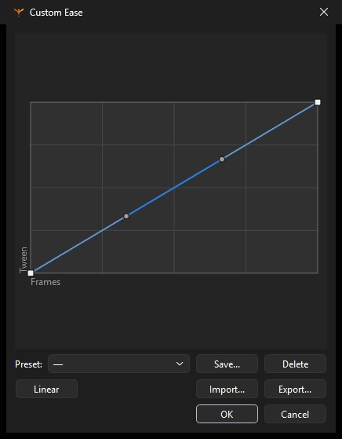

Animation
Tweens and easing
A tween fills in the frames between two poses. Phoenix has three kinds of tween, each suited to a different job.
| Tween | Animates | Use it for |
|---|---|---|
| Classic | An instance between two keyframes: position, size, rotation, skew, color effect and filters | Most character and prop animation, and anything on a motion guide |
| Shape | A merge shape or drawing object morphing into another shape | Blobs, liquids, smoke, simple transformations |
| Motion | An object along an editable path, with each property on its own curve | Moves you want to shape with curves rather than keyframes |
Classic tweens
- Put an instance of a symbol on a keyframe.
- Add a second keyframe later on the same layer (F6) and change the instance there: move it, scale it, rotate it, or change its color effect.
- Right-click a frame between them and choose Classic Tween, or choose .
The span turns lilac with an arrow. Click any frame in it to set its options on the Frame tab's Tweening section:
- Ease
- How the motion speeds up and slows down. See Easing.
- Rotate
- Auto turns the shortest way; Clockwise and Counter Clockwise add whole extra turns, as many as you enter; None stops it rotating.
- Snap
- Snaps the instance's registration point onto a motion guide.
- Sync
- Keeps a graphic symbol's own animation in step with the tween.
To move an object along a curved path, draw the path on a guide layer above it. See Motion guides.
Shape tweens
- Draw a shape on a keyframe.
- Add a keyframe later on the same layer and draw, or reshape, the shape it should become. Colors and strokes can change too.
- Right-click a frame between them and choose Shape Tween, or .
The span turns green. Shape tweens work on shapes, not on symbol instances or groups; break those apart first. Gradients and stroke widths tween along with the outline.
Shape tweens are smoothest between similar shapes. If a morph twists or flips, add shape hints, or an in-between keyframe that guides it.
Shape hints
Shape hints tell a shape tween which point of the first shape becomes which point of the last, so a morph keeps its corners where you want them.
- Put the playhead on the first keyframe of the shape tween and choose (Ctrl+Shift+H). A lettered circle, starting at a, appears in the middle of the shape.
- With the Selection tool, drag the hint onto a point of the shape's outline. Hints on the first keyframe are yellow.
- Go to the tween's end keyframe, where the same letter waits in green, and drag it to where that point should end up.
You can add up to 26 hints. To remove one, drag it off the stage; removes them all. Hints are saved with the tween in FLA files too.
Motion tweens
Select an instance and choose . A motion tween span is created, and from then on you animate by changing the object rather than by adding keyframes:
- Move the playhead to any frame in the span, then move, rotate or scale the object. Phoenix adds a property keyframe there.
- The object's motion path is drawn on the stage with its property keyframes. Drag a property keyframe on the path to move it, or drag the path between keyframes to bend it.
- Press F6 inside the span to add a property keyframe without changing anything, or F7 to end the motion there.
- Lengthen or shorten the span and the motion stretches to fit.
The Motion Editor
Open and select a motion tween to see each property as a curve over time: X and Y position, rotation, skew and scale. For a symbol instance, the list also has its color effect (alpha, brightness, tint and the advanced color percentages and offsets) and the numbers of each of its filters, such as blur, strength, distance and angle. Pick a property from the list to edit its curve:
- Drag a point to change the value or the frame; drag its handles to shape the curve.
- Double-click the curve, or use Add Keyframe, to add a point. Select one and press Delete, or use Remove, to delete it.
- Type exact numbers in the Frame and Value fields.
- Apply an ease to one property with Property ease, or to the whole tween with Tween ease (from -100 to 100).
Changing an instance's color effect in the Properties panel part way through a motion tween keys it there too, just as moving it does.
Easing
Easing makes motion feel natural: real objects take time to get going and to stop. Set the Ease on the Frame tab for any classic or shape tween.
- Classic eases with a single amount: negative values ease in (start slowly), positive values ease out (end slowly).
- Presets come in families such as Quad, Cubic, Sine, Back, Bounce and Elastic, each in In, Out and In Out forms.
- Custom lets you draw your own curve.
Custom ease curves
Click Edit... under Ease to open the curve editor. The horizontal axis is time across the tween; the vertical axis is how far the change has got.

- Drag the points and their handles to shape the curve.
- Linear resets it to a straight line.
- Save... stores the curve under a name in the Preset list, for use in any document; Delete removes one.
- Export... and Import... share curves with other people as JSON files.
Motion presets
keeps a collection of reusable motions.
- Save Current...
- Saves the selected motion tween as a preset.
- Apply
- Applies the chosen preset to the selected object.
- Import..., Import Folder...
- Brings in motion preset files (
.xml). - Export..., Delete
- Shares or removes presets.
Orient to Path for motion tweens, and 3D rotation in motion tweens (classic tweens carry it).